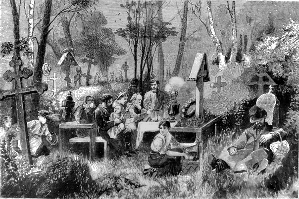
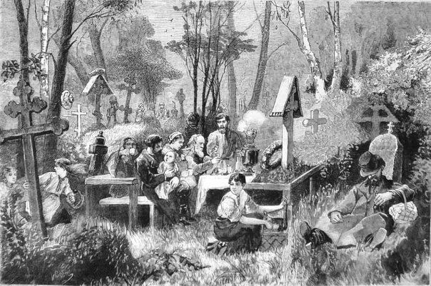

ЛИСТ D · 04 / 12
СТОЛ
Кормить мёртвых, кормить живых
Поминальная трапеза — место, где умершего прямее всего принимают за человека со вкусами, местом и аппетитом.
Документировано в XIX–XXI веках · Россия; один украинский пример, помеченный как таковой · Православная поминальная практика; семейный обычай

D / 01
Горячий обед
В день погребения семья кормит всех, кто пришёл. В этнографии у этой трапезы в каждом регионе есть своё имя — «горячий обед», «горячий стол» — и твёрдая грамматика: первое блюдо, которое едят прежде всего прочего, место, оставленное для умершего, отложенная порция, еда, отнесённая на могилу.
Трапеза — не только поминовение. Это ещё и расчёт: тех, кто обмывал, рыл, нёс, читал и готовил, кормят, и обязательство семьи гасится едой. Отказаться сесть за стол — значит отказаться от расчёта.

| Еда | Документированный контекст | Примечания | Достоверность |
|---|---|---|---|
| Кутья / коливо | Варёное зерно с мёдом; церковная панихида; семейный стол | Пшеница или рис; изюм в более поздней практике | документировано |
| Блины | Записаны как похоронная и поминальная еда в описаниях XIX в. | Также календарная еда; тот же предмет, но другой довод | документировано |
| Хлеб | Кладут на стол; несут на могилу | Самый устойчивый элемент во всех описаниях | документировано |
| Мёд | Едят с кутьёй и блинами | Сладость как образ воскресения | документировано |
| Водка | Сообщается у могилы и за столом | Практика позднеимперская и советская; происхождение не установлено | средняя |
| Место для умершего | Прибор, порция, свободное место за столом | Сообщается во многих рассказах; не универсально | средняя |
D / 02
Кутья и двусмысленность зерна
Кутья — варёное зерно, подслащённое мёдом, и в церковной форме — коливо — её приносят на панихиду и освящают. Зерно читают как образ воскресения: его закапывают, и оно не остаётся закопанным. Это прочтение старое, и оно достаточно очевидно, чтобы возникать независимо много раз.
Чего источники не решают — так это соотношения церковного блюда и домашнего. В одних рассказах это один и тот же предмет под двумя названиями; в других домашняя кутья — отдельное, более богатое кушанье с изюмом или орехами. Атлас сохраняет оба варианта и оставляет вопрос открытым.


Аппарат источники · связанные листы · термины
Источники этого листа
- ivanits1989 Ivanits, Linda J. — Russian Folk Belief (1989)
- zelenin1916 Зеленин, Дмитрий Константинович — Очерки русской мифологии: умершие неестественною смертью и русалки (1916)
- tolstoy1995 Толстой, Никита Ильич (ред.); Толстая, Светлана Михайловна (ред. т. 5) — Славянские древности: Этнолингвистический словарь (1995–2012)
Ссылки, даты обращения и ограничения — в списке источников.